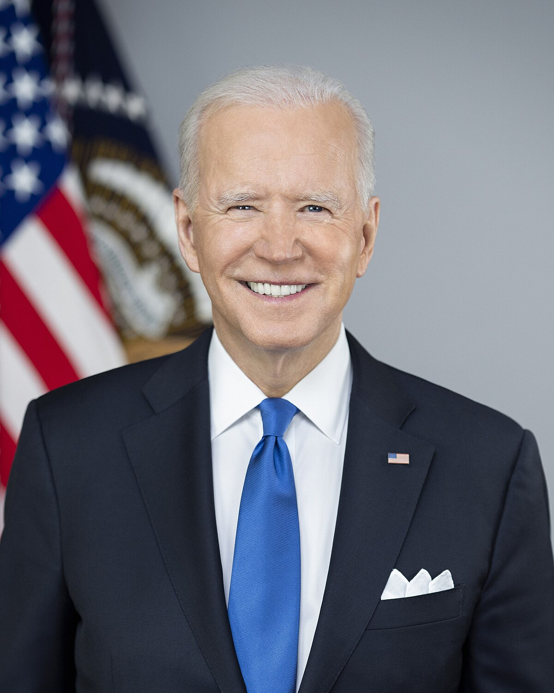

Mengsrun Nit
Olivia Longsworth
I am a Furman IT and chemistry major. I love my pet turtle Mr. Spootus Mootis and gardening.
Flynn Nisbet

I am a Furman senior Computer Science major, minoring in Data Analytics, who grew up in Cambodia. I went to high school in China, then the Netherlands, before making it all the way to Furman. I love all asian food, specifically Cambodian, and go to Bulgogi Korean Grill frequently.